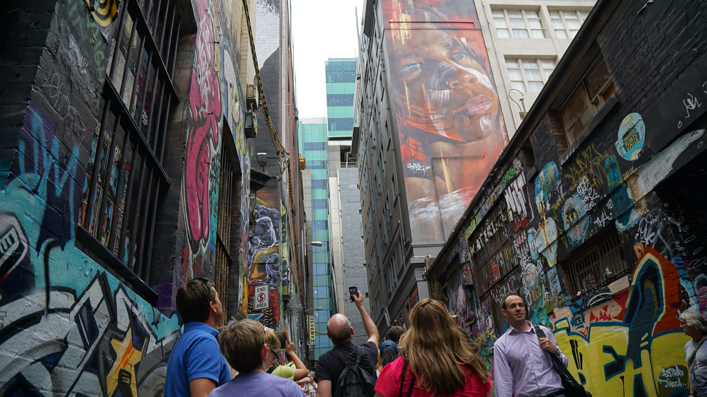

2025 阿根廷、南極半島
- 1/09 : 桃園-香港-伊斯坦堡
- 1/10 : 伊斯坦堡-巴西聖保羅-布宜諾斯艾利斯
- 1/11 : 布宜諾斯艾利斯-烏斯懷亞
- 1/12 : 烏蘇懷亞-登船出發
- 1/13 : 德雷克海峽
- 1/14 : 德雷克海峽
- 1/15 : 南設德群島 (雪島、捕鯨者灣)
- 1/16 : 南極半島 (夏洛特灣、默尼耶角)
- 1/17 : 南極半島 (丹科島、天堂灣、利馬水道)
- 1/18 : 德雷克海峽
- 1/19 : 德雷克海峽
- 1/20 : 烏斯懷亞-查爾騰鎮 El Chaltén
- 1/21 : 查爾騰鎮-菲茨羅伊峰 Fitz Roy
- 1/22 : 查爾騰鎮-埃爾卡拉法特El Calafate
- 1/23 : 埃爾卡拉法特-佩里托莫雷諾冰川
- 1/24 : 埃爾卡拉法特-布宜諾斯艾利斯
- 1/25 : 布宜諾斯艾利斯
- 1/26 : 布宜諾斯艾利斯-巴西聖保羅
- 1/27 : 巴西聖保羅-伊斯坦堡
- 1/28 : 伊斯坦堡-桃園
路線圖1 »
路線圖2 »
南極半島 »
前往相簿 »
2024 智利
- 1/23 : 桃園-洛杉磯-聖薩爾瓦多
- 1/24 : 聖薩爾瓦多-哥倫比亞波哥大-聖地牙哥
- 1/25 : 聖地牙哥-納塔萊斯港
- 1/26 : 納塔萊斯港-百內國家公園
- 1/27 : 百內國家公園
- 1/28 : 百內國家公園
- 1/29 : 百內國家公園
- 1/30 : 百內國家公園-納塔萊斯港-阿雷納斯
- 1/31 : 阿雷納斯-聖地牙哥
- 2/01 : 聖地牙哥-復活節島
- 2/02 : 復活節島
- 2/03 : 復活節島
- 2/04 : 復活節島
- 2/05 : 復活節島 -聖地牙哥
- 2/06 : 聖地牙哥-墨西哥城
- 2/07 : 墨西哥城-聖地牙哥
- 2/08 : 聖地牙哥-波哥大-聖薩爾瓦多-洛杉磯
- 2/09: 洛杉磯-舊金山
- 2/10: 舊金山-桃園
路線圖1 »
路線圖2 »
前往相簿 »
2023 葡萄牙、比利時、荷蘭
- 1/09 : 桃園-杜拜
- 1/10 : 杜拜-葡萄牙里斯本
- 1/11 : 里斯本
- 1/12 : 里斯本-辛特拉
- 1/13 : 里斯本
- 1/14 : 里斯本-波多
- 1/15 : 波多
- 1/16 : 波多
- 1/17 : 波多-比利時布魯塞爾
- 1/18 : 布魯塞爾
- 1/19 : 布魯塞爾-根特
- 1/20 : 根特-布魯日
- 1/21 : 布魯日-荷蘭鹿特丹
- 1/22 : 鹿特丹-阿姆斯特丹
- 1/23 : 阿姆斯特丹
- 1/24 : 阿姆斯特丹
- 1/25 : 阿姆斯特丹-杜拜
- 1/26 : 杜拜-桃園
路線圖1 »
路線圖2 »
路線圖3 »
前往相簿 »
2020 波蘭、波羅的海三小國
- 1/13 : 台中-桃園-香港
- 1/14 : 香港-丹麥哥本哈根-波蘭格但斯克
- 1/15 : 格但斯克-馬爾堡
- 1/16 : 格但斯克-托倫
- 1/17 : 托倫-華沙
- 1/18 : 華沙
- 1/19 : 華沙-克拉科夫
- 1/20 : 克拉科夫-奧斯威辛集中營
- 1/21 : 克拉科夫-鹽礦
- 1/22 : 克拉科夫-立陶宛-維爾紐斯
- 1/23 : 根維爾紐斯-特拉凱
- 1/24 : 維爾紐斯-拉脫維亞-里加
- 1/25 : 里加
- 1/26 : 里加-愛沙尼亞塔林
- 1/27 : 塔林-芬蘭赫爾辛基塔林
- 1/28 : 塔林
- 1/29 : 塔林-丹麥哥本哈根
- 1/30 : 哥本哈根-香港-桃園
路線圖1 »
路線圖2 »
前往相簿 »
2019 以色列、約旦、巴勒斯坦
- 1/22 : 桃園-香港-伊斯坦堡
- 1/23 : 伊斯坦堡-特拉維夫-耶路撒冷(苦路14站+聖墓教堂)
- 1/24 : 耶路撒冷(聖殿山+西牆隧道+橄欖山+大衛塔)
- 1/25 : 耶路撒冷(大衛之城)
- 1/26 : 耶路撒冷-巴勒斯坦(伯利恆)
- 1/27 : 耶路撒冷-馬薩大
- 1/28 : 耶路撒冷-亞喀巴 -瓦地倫
- 1/29 : 瓦地倫-佩特拉
- 1/30 : 佩特拉
- 1/31 : 佩特拉-克拉克城堡-死海
- 2/01 : 死海-尼波山-米底巴-傑拉什-安曼
- 2/02 : 安曼
- 2/03 : 安曼-耶路撒冷
- 2/04 : 耶路撒冷-特拉維夫
- 2/05 : 特拉維夫
- 2/06 : 特拉維夫-伊斯坦堡
- 2/07 : 伊斯坦堡-香港-台中
路線圖1 »
路線圖2 »
前往相簿 »
2018 祕魯、玻利維亞
- 2/13 : 桃園-首爾
- 2/14 : 首爾-墨西哥城-利馬
- 2/15 : 利馬-阿雷基帕
- 2/16 : 阿雷基帕-普諾
- 2/17 : 普諾-科巴卡瓦納-太陽島
- 2/18 : 太陽島-拉巴斯
- 2/19 : 拉巴斯-烏尤尼
- 2/20 : 烏尤尼
- 2/21 : 烏尤尼
- 2/22 : 烏尤尼-拉巴斯
- 2/23 : 拉巴斯-庫斯科
- 2/24 : 庫斯科
- 2/25 : 庫斯科
- 2/26 : 庫斯科-聖谷-馬丘比丘
- 2/27 : 馬丘比丘-庫斯科
- 2/28 : 庫斯科-利馬
- 3/01 : 利馬
- 3/02 : 利馬-墨西哥城
- 3/03 : 墨西哥城-首爾
- 3/04 : 首爾-桃園
路線圖1 »
路線圖2 »
前往相簿 »
2017 斯洛維尼亞、克羅埃西亞
- 1/19 : 桃園-香港-維也納-威尼斯
- 1/20 : 威尼斯-布雷德湖
- 1/21 : 布雷德湖-盧布里亞納
- 1/22 : 盧布里亞納-羅維尼
- 1/23 : 羅維尼
- 1/24 : 羅維尼-普拉-里耶卡
- 1/25 : 里耶卡-Karlovac-十六湖國家公園
- 1/26 : 十六湖國家公園-斯普利特
- 1/27 : 斯普利特
- 1/28 : 斯普利特-赫瓦爾
- 1/29 : 斯普利特-莫斯塔爾
- 1/30 : 莫斯塔爾-杜布洛夫尼克
- 1/31 : 杜布洛夫尼克
- 2/01 : 杜布洛夫尼克-KOTOR
- 2/02 : KOTOR-杜布洛夫尼克
- 2/03 : 杜布洛夫尼克-札格雷布-慕尼黑-香港
- 3/04 : 香港-台中
路線圖1 »
路線圖2 »
前往相簿 »
2016 英國、西班牙
- 1/29 : 桃園-香港
- 1/29 : 香港-法蘭克福-威尼斯
- 1/30 : 威尼斯
- 1/31 : 威尼斯-倫敦
- 2/01 : 倫敦
- 2/02 : 溫莎-巨石陣-巴斯
- 2/03 : 劍橋
- 2/04 : 倫敦
- 2/05 : 牛津
- 2/06 : 倫敦
- 2/07 : 倫敦-巴塞隆納
- 2/08 : 巴塞隆納
- 2/09 : 巴塞隆納
- 2/10 : 巴塞隆納-馬德里-塞哥維亞
- 2/11 : 托雷多
- 2/12 : 馬德里-慕尼黑-香港
- 2/13 : 香港-台中
路線圖1 »
路線圖2 »
路線圖3 »
前往相簿 »
2015 紐西蘭南島
- 2/12 : 桃園-吉隆坡-墨爾本
- 2/13 : 墨爾本-基督城
- 2/14 : 基督城-葛雷茅斯
- 2/15 : 葛雷茅斯-福斯冰河
- 2/16 : 福斯冰河
- 2/17 : 福斯冰河-瓦納卡
- 2/18 : 瓦納卡
- 2/19 : 瓦納卡-皇后鎮
- 2/20 : 皇后鎮
- 2/21 : 皇后鎮-蒂阿惱
- 2/22 : 蒂阿惱-米佛峽灣
- 2/23 : 蒂阿惱-旦尼丁
- 2/24 : 旦尼丁-澳瑪魯
- 2/25 : 奧瑪魯-庫克山
- 2/26 : 庫克山-特卡波
- 2/27 : 特卡波-基督城-墨爾本
- 2/28 : 墨爾本-吉隆坡-桃園
路線圖1 »
路線圖2 »
前往相簿 »


2014 奧地利、匈牙利、捷克
- 5/22 : 桃園-曼谷
- 5/23 : 曼谷-維也納-薩爾斯堡
- 5/24 : 薩爾斯堡-德國國王湖
- 5/25 : 薩爾斯堡-哈修塔特
- 5/26 : 哈修塔特
- 5/27 : 哈修塔特-庫倫諾夫
- 5/28 : 庫倫諾夫-布拉格
- 5/29 : 布拉格
- 5/30 : 布拉格
- 5/31 : 布拉格-布達佩斯
- 6/01 : 布達佩斯
- 6/02 : 布達佩斯
- 6/03 : 布達佩斯-維也納
- 6/04 : 維也納
- 6/05 : 維也納
- 6/06 : 維也納-曼谷
- 6/07 : 曼谷-桃園
路線圖1 »
路線圖2 »
前往相簿 »
2013 法國、摩納哥
- 6/07 : 桃園-曼谷-阿布達比-日內瓦
- 6/08 : 日內瓦-尼斯
- 6/09 : 尼斯
- 6/10 : 尼斯-摩納哥
- 6/11 : 尼斯-亞維農
- 6/12 : 亞維農
- 6/13 : 亞維農
- 6/14 : 亞維農-巴黎-聖米歇爾山
- 6/15 : 聖米歇爾山-巴黎
- 6/16 : 巴黎
- 6/17 : 巴黎
- 6/18 : 巴黎
- 6/19 : 巴黎
- 6/20 : 巴黎-阿布達比-曼谷
- 6/21 : 曼谷-桃園
路線圖1 »
路線圖2 »
前往相簿 »
2012 土耳其、希臘
- 5/19 : 桃園-曼谷-阿布達比-伊斯坦堡
- 5/20 : 伊斯坦堡
- 5/21 : 伊斯坦堡-番紅花城
- 5/22 : 番紅花城-安卡拉-卡帕多奇亞
- 5/23 : 卡帕多奇亞
- 5/24 : 卡帕多奇亞-棉堡
- 5/25 : 棉堡-Marmaris
- 5/26 : Marmaris-希臘羅德島
- 5/27 : 羅德島
- 5/28 : 羅德島-雅典-聖托里尼
- 5/29 : 聖托里尼
- 5/30 : 聖托里尼
- 5/31 : 聖托里尼-雅典
- 6/01 : 雅典
- 6/02 : 雅典-阿布達比-曼谷
- 6/03 : 曼谷-桃園
路線圖1 »
路線圖2 »
前往相簿 »
我的足跡
- 2026-摩洛哥、西班牙、法國
- 2025-阿根廷、南極
- 2024-智利
- 2023-葡萄牙、比利時、荷蘭
- 2020-波蘭、波羅的海三小國、芬蘭赫爾辛基
- 2019-以色列、約旦、巴勒斯坦
- 2018-墨西哥城、祕魯、玻利維亞
- 2017-斯洛維尼亞、克羅埃西亞、黑山共和國
- 2016-英國、西班牙
- 2015-澳洲墨爾本、紐西蘭南島
- 2014-奧地利、捷克、匈牙利
- 2013-瑞士日內瓦、法國、摩納哥
- 2012-土耳其、希臘
- 2011-義大利
- 2010-香港、印度
- 2009-雲南、西藏
- 2007-柬埔寨
- 2006-馬來西亞、埃及
- 2005-泰國
路線圖 »
matadornetwork »
travellerspoint »


{kind=link}
{kind=link}
{kind=link}
{kind=link}
{kind=link}
{kind=link}
{kind=link}
{kind=link}
{kind=link}
{kind=link}
{kind=link}
{kind=link}
{kind=link}
{kind=link}
{kind=link}
{kind=link}
{kind=link}
{kind=link}
{kind=link}
{kind=link}
{kind=link}
{kind=link}
{kind=link}
{kind=link}
{kind=link}
{kind=link}
{kind=link}
{kind=link}